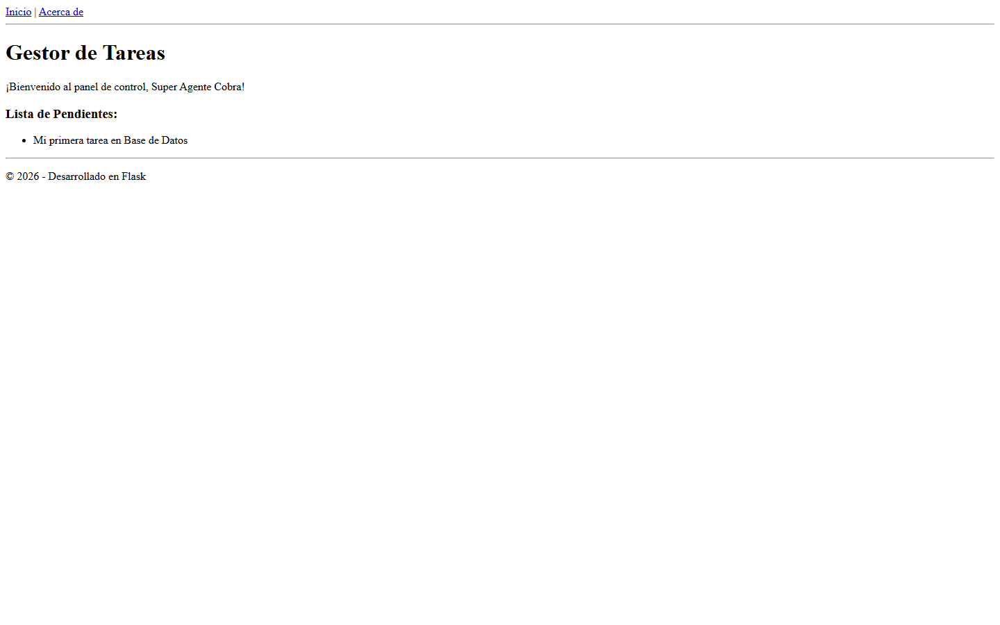
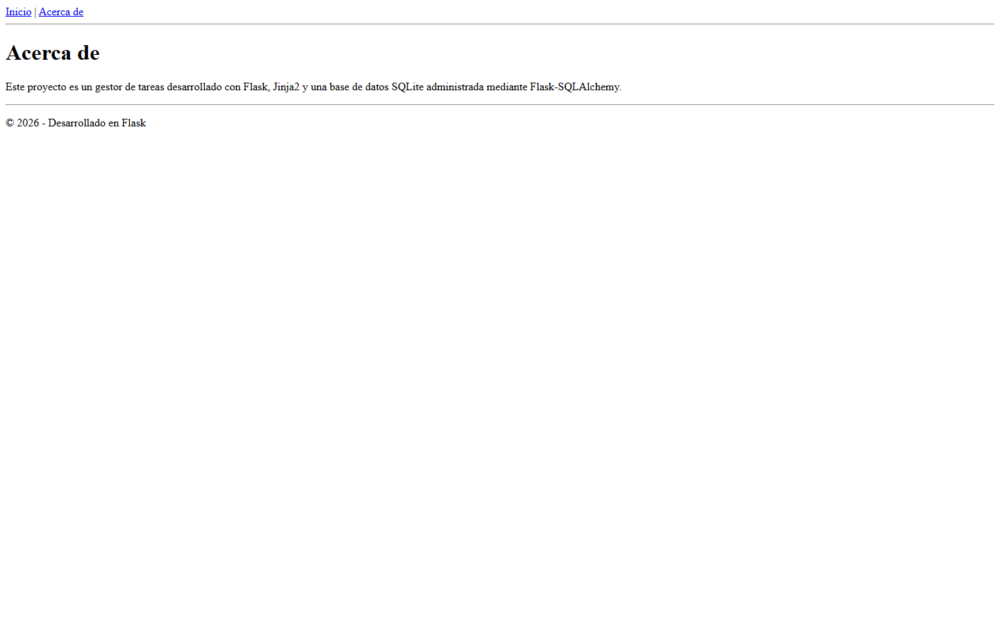

Tecnología Web · Módulo 3
Gestor de tareas conectado a una base de datos SQLite.
ORM en Python · Datos persistentes · SQLitePersistencia
Las tareas estaban en una lista de Python y desaparecían al reiniciar el servidor.
Los registros quedan guardados en instance/tareas.db.
Integra SQLAlchemy con Flask y administra sesiones, modelos y consultas.
Representa una tabla como una clase y cada fila como un objeto de Python.
Configuración
db.create_all() → crea automáticamente la tabla si no existe.
Circuito completo
La sesión confirma la operación y Jinja2 recibe objetos del modelo.
Tarea(titulo=...)
db.session.add()
db.session.commit()
Tarea.query.all()
devuelve objetos
desde SQLite
for tarea in tareas
mostrar
tarea.titulo
Resultado final


“Mi primera tarea en Base de Datos” permanece guardada en instance/tareas.db.